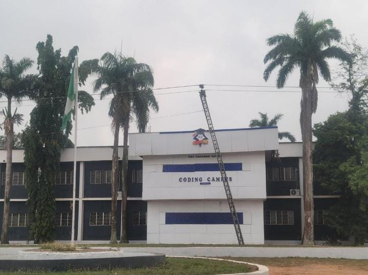

I love reading, praying, writing, eating, sleeping! etc.
I can't believe i'm considering swimming as my hubby. It's on my to-do list anyways.
A Stroll at SQI ogbomosho

SQI College of ICT is a private technology-focused educational institution located in Ogbomoso, Oyo State, Nigeria. SQI stands for Soft Quest Incorporated.
primary focus is to equip students with technological knowledge, practical skills, professional development and entrepreneurial abilities.
What's up!
like a starlight ray, so the smiles from in-between her gap teeth. In case you are wondering why that's the first thing
I saw, well, that's the first thing the college presented to me: A welcoming, Jovia, understandable,
and reliable staff at the college entrance by my left. I won,t mind if this is where i get to stay throughout the day you know.
She explained what software engineering means and it was like teaching a kid how to read ABC. Newsflash:
that's my teacher not the one behind desk at the left side. It was my first time in class and I already felt like a software engineer.
What a wonder teacher i have.
And in case you are dreaming of me telling you about what I learnt in class, you better wake up and come to SQI, or maybe i will tell you a little bit in my subsequent post.
After the class, I linked up with a few coursmates on the advice of my darling teacher and I got to exchange contact. I moved from there to the library just to..
you know, widen up my knowledge before another class but guess what, the book I picked was so boring, more reason I won't be telling
you the name of the author.
Hello dear reader, You are welcome to my blog post. I am Oladayo Oguntade as stated above, a writer, poet, law student and of course, a Web Development student of SQI Ogbomosho. I will love you to walk with me as I share my experience throughout my stay in the institution.